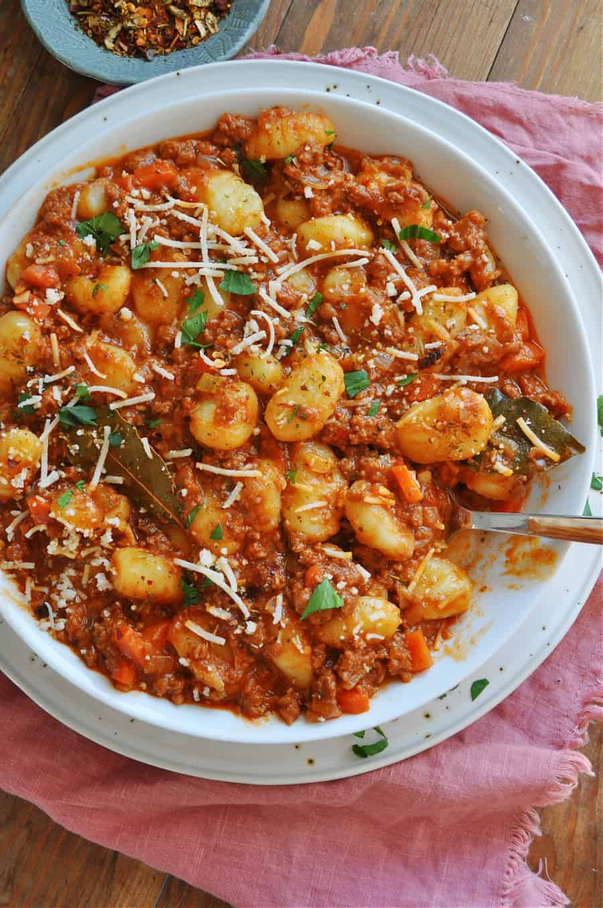

Gnocchi Tofu Bolognese

Description
A delicious creamy vegan bolognese sauce with tofu and potato gnocchi. Serves 2.
Ingredients
- 400g vegan gnocchi
- 200g tofu
- 1 can of chopped tomatoes
- 100ml coconut milk
- 100ml hot vegetable stock
- 50g vegan cheese, grated
- 2 carrots
- 2 cloves of garlic
- 1 onion
- Olive oil
- Oregano, basil, rosemary, thyme
- Paprika
- Salt and pepper to taste
Steps
- Press or boil the tofu, mash it or cut it into cubes to scramble while frying. Peel and cut the onion, garlic and carrot.
- Heat the oil in a frying pan. Add tofu, carrot and onion, then garlic, in that order. Fry, stirring occasionally until it looks nice.
- Add tomatoes, coconut milk, vegetable stock and herbs. Season with salt and pepper. Simmer for a couple of minutes.
- Add the gnocchi to the pan. Let it simmer for about 5 more minutes. Make sure it's not too soupy or dry, and season to taste.
- Transfer everything from the pan to an oven-proof dish and top with vegan cheese. Cook at 180 degrees for 10-15 minutes.
Back to Homepage